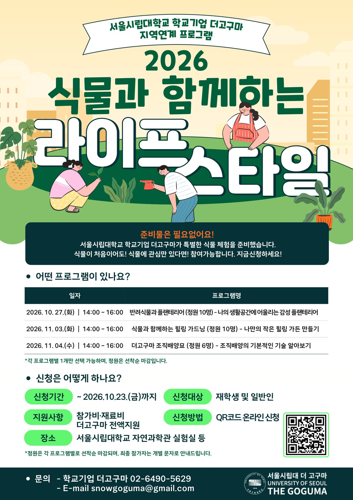

전체 1건
1지역연계 프로그램2026 식물과 함께하는 라이프 스타일 시리즈 안내2026.10.06

준비물은 필요 없어요! 식물이 처음이어도, 식물에 관심만 있다면 누구나 참여할 수 있는 서울시립대학교 학교기업 더고구마 지역연계 프로그램입니다. ■ 프로그램 · 2026.10.27.(화) 14:00~16:00 반려식물과 플랜테리어 (정원 10명) – 나의 생활공간에 어울리는 감성 플랜테리어 · 2026.11.03.(화) 14:00~16:00 식물과 함께하는 힐링 가드닝 (정원 10명) – 나만의 작은 힐링 가든 만들기 · 2026.11.04.(수) 14:00~16:00 더고구마 조직배양묘 (정원 6명) – 조직배양의 기본적인 기술 알아보기 ※ 각 프로그램별 1개만 선택 가능하며, 정원은 선착순 마감입니다. ■ 신청 안내 · 신청기간: ~ 2026.10.23.(금)까지 · 신청대상: 재학생 및 일반인 · 지원사항: 참가비·재료비 더고구마 전액 지원 · 신청방법: 포스터의 QR코드로 온라인 신청 · 장소: 서울시립대학교 자연과학관 실험실 등 ※ 최종 참가자는 개별 문자로 안내드립니다. ■ 문의 학교기업 더고구마 02-6490-5629 · snowgoguma@gmail.com